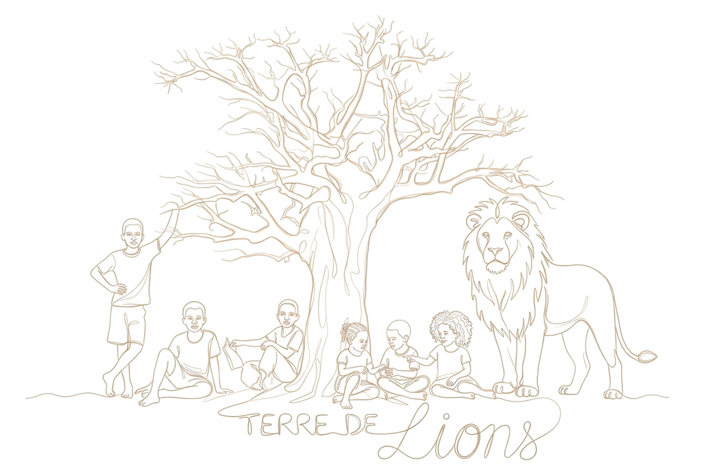
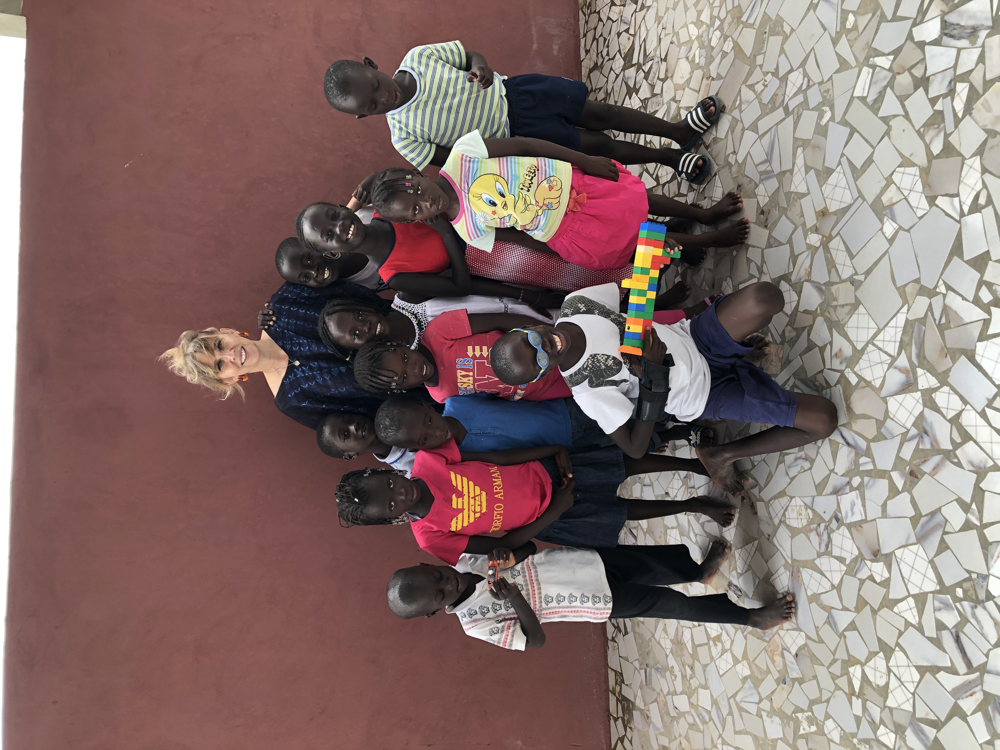
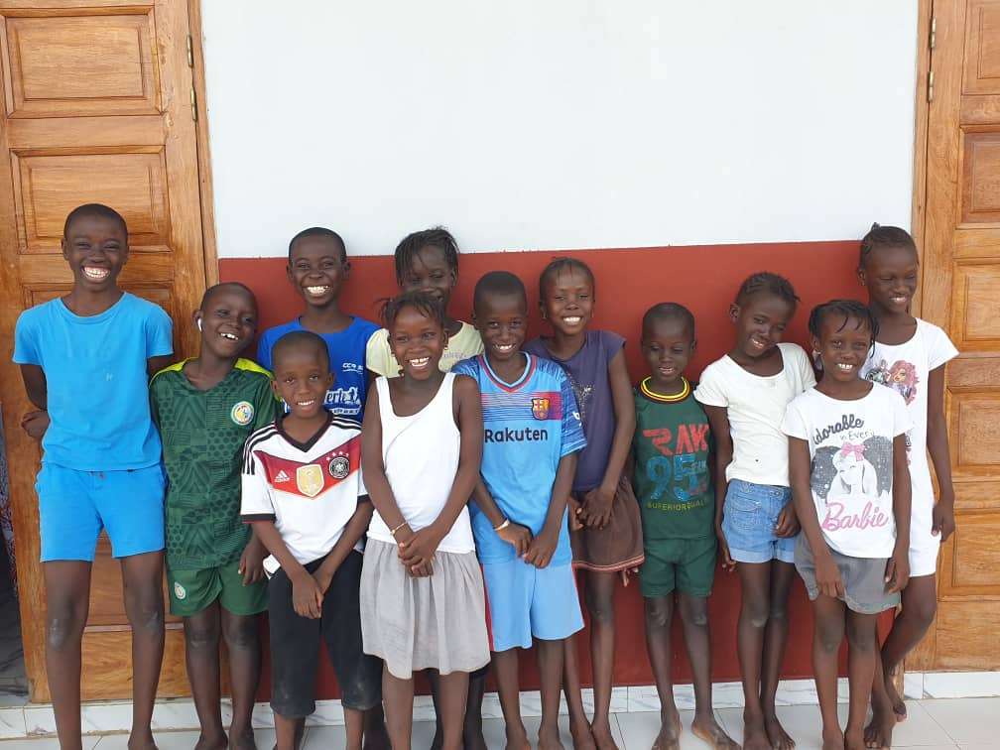
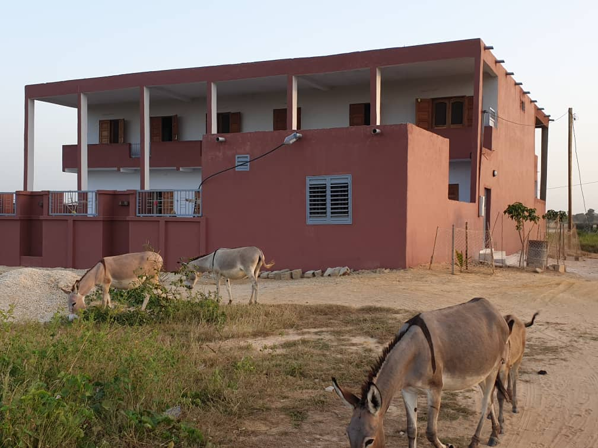
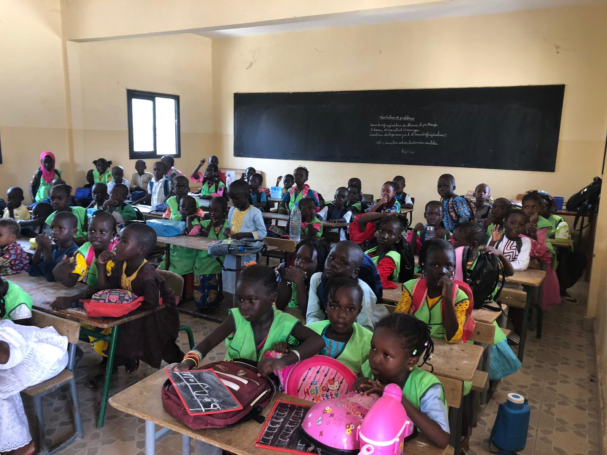
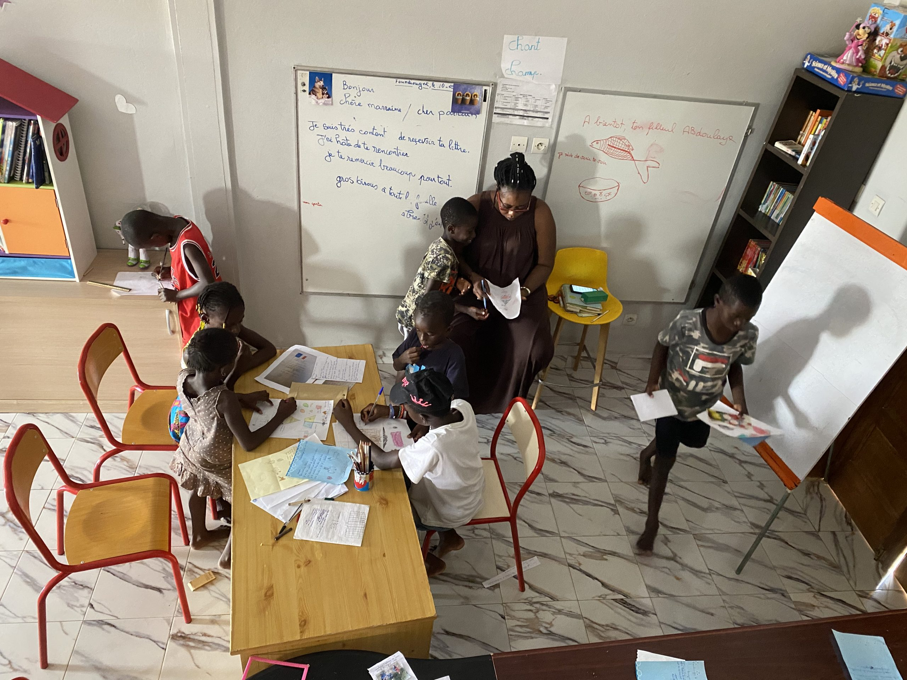
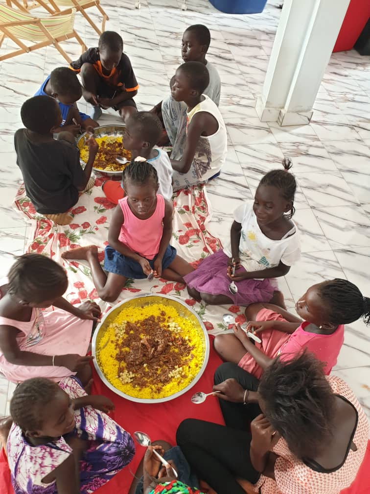
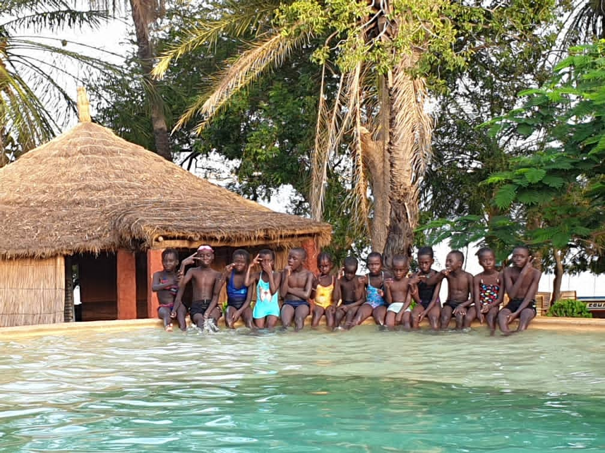
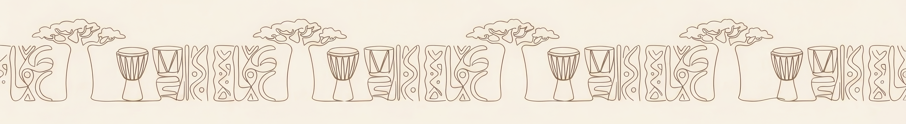

Kids of the Joy
Sénégal
Lueur d'espoir.
Chaque enfant,
un horizon.
↓ Découvrir

Association Kids of the Joy — Sénégal
Est. 2018
Nous croyons en un monde où chaque enfant a le potentiel de briller.
À travers des parrainages, des dons et une communauté engagée, nous offrons aux enfants défavorisés un soutien et un environnement propice à leur épanouissement. Avec une éducation de qualité, l'accès à des activités inspirantes et des voyages éducatifs, nous les préparons à réaliser leurs rêves.
Joignez-vous à nous pour être la lueur d'espoir dans la vie de ces enfants. Ensemble, nous créons une histoire d'amour, d'apprentissage et d'opportunités.
— L'équipe Kids of the Joy
8+
années d'engagement
20
enfants accompagnés depuis la création
100%
accompagnés jusqu'à l'université
25
enfants que la maison peut accueillir

La fondatriceFig. 1 — Une vision, des enfants, une famille.

Le groupeFig. 2 — Les enfants de la maison KOJ.

La maisonFig. 3 — Un foyer, une famille, un avenir.

L'écoleFig. 4 — L'apprentissage, point de départ de toute aventure.

ApprentissageFig. 5 — L'éducation, fondation de l'avenir.

Repas collectifsFig. 6 — Partager les repas, partager les moments.

Sorties fin d'annéeFig. 7 — Aventures partagées, souvenirs pour la vie.
250€
par an pour parrainer un enfant — soit moins d'un euro par jour pour le scolariser, le nourrir et l'accompagner.
Sommaire du site
